第20章 反转形态：双重顶和双重底，头肩顶和头肩底¶
第 20 章 “反转”形态：双重顶和双重底，头肩顶和头肩底
由于趋势不断制造反转形态，而除了最后一个之外全部失败，所以认为这些经常讨论的形态是反转形态，是一种误导。更为准确的做法是把它们看作极少失败的延续形态，但是，当延续形态失败时，就可能引起反转。把每个顶或底看作很棒的反转架构是错误的，因为如果你选择所有那些逆势入场，那么你的大部分交易将都是亏损交易，偶尔盈利的交易将不足以弥补你的亏损。不过，如果你善于选择，并且寻找趋势可能反转的其他证据，那么这些可能都是有效的架构。
所有的头肩顶和头肩底，实际上都是头肩延续形态（旗形），因为它们是交易区间，像所有交易区间一样，它们更可能在趋势方向上突破，很少会令趋势反转。双重顶和双重底也是如此。举例说明，如果多头市场中出现一个头肩顶，那么对颈线的突破通道会失败，接下来市场几乎总是向上反转，形成一个顺势的向上突破，超越右肩。如果该形态基本水平，那么它就成为一个三角形，如果它略微下倾，那么它就成为一个楔形多头旗形。三次下推分别是左肩、头和右肩后面的下跌腿。右肩是市场在头部突破多头趋势线后尝试形成一个更低高点。由于从头部开始的下跌通常会跌破多头趋势线，所以右肩成为一个更低高点突破回撤。另外，如果有一轮空头市场下下形成一个交易区间，那个交易区间的形状近似于一个头肩顶，那么对颈线的向下突破就是一个空头旗形的顺势突破，很可能引出更低的价格。
类似地，头肩底也是顺势架构。空头趋势中的头肩底通常是三角形或楔形空头旗形，应该向下突破，跌至右肩下方。多头趋势中的头肩底是一个多头旗形，应该向上突破，超越颈线。
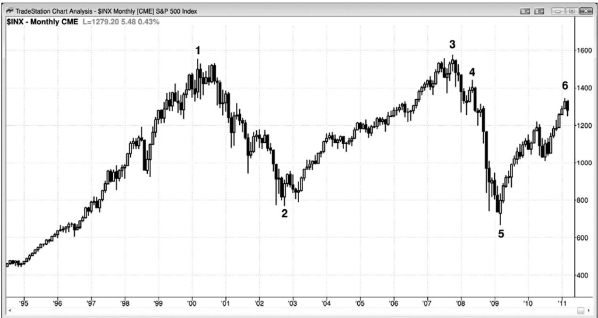
如图 20.1 所示，标准现金指数的月线图中有一个大型的双重顶。2007 年夏季，市场测试2000高点，在棒1区域买进的所有交易者都要把自己的资金撤出。他们已经经历了跌至棒2 的亏损。然而，到棒 3 为止，他们已经补回了那些损失，不希望冒再次下跌的风险。他们退出自己的头寸，直到形成明显的回撤之后，他们才会考虑再次买进。在大批买家离场后，做空的卖家控制市场，驱动市场下跌。就像常常发生的那样，当交易者们希望在回撤买进时，回撤却变得如此陡峭而剧烈，于是他们改变了自己的想法，这种买压的缺乏有时会致使下跌加速。原因显然要比我所说的复杂很多，因为有无数的参与者根据无数的理由在操作，但这是其中一种。
P173
市场常常在先前的低点找到支撑。这里，在棒 2 区域卖空的空头现在回到盈亏平衡点附近，他们的离场将引起一波反弹。在这一点处，市场处于交易区间内，那可能持续较短时间，也可能持续较长时间。一旦突破到来，市场就会上涨或下跌。双重顶的标准入场是，在略低于两个顶点之间的下探的低点处设定卖出止损单。然而，那很少会成功，因为 80%的突破失败。那个下探就是棒 2，对它的低点的突破出现在 6 年之后，而且失败了。对于从棒 5 开始的反弹，显然双重顶正引出一段交易区间，而不是空头突破。很少有交易者会把这看作一个大型的双重顶，等待在棒 2 下方做空。大多数人会在棒 3 前后，或者 7 个月之后的棒 4 更低高点和低点 2 前后做空。
在接下来的几年里，在一个双重顶回撤做空架构之后，市场可能向下测试棒5附近区域。甚至可以把那个双重顶回撤做空架构看作一个头肩顶，其中左肩只比头部略低一点。由于大部分顶部失败，所以随后很可能是一波反弹，整个形态将成为一个大型的楔形多头旗形。然后将是对该形态顶部的突破，在接下来的一二十年里，可能向上形成一波近似的测量运动。
顺势提一句，图表也有几个成功的小型双重顶。棒 1 楔形之后的那个更低高点与棒 1 形成一个双重顶。另外，截止棒 3 楔形的第二次上推与棒 3 形成一个双重顶，尽管它比棒 3 高点略低。
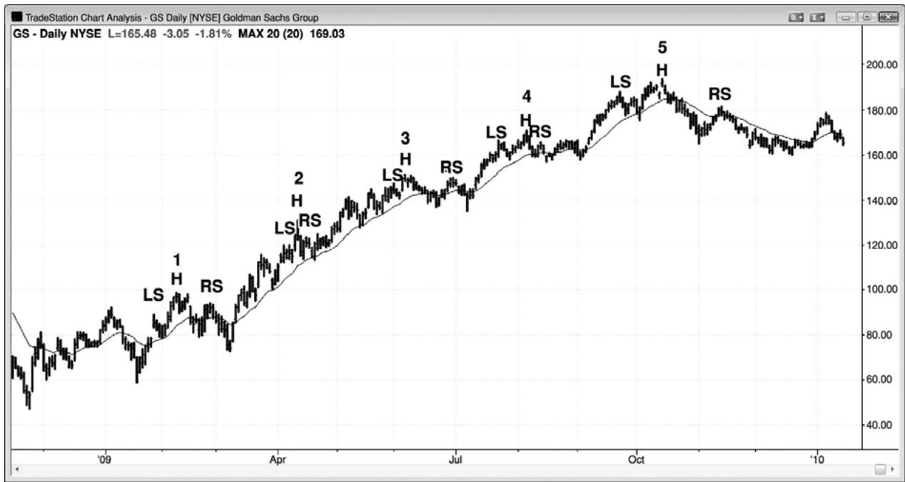
如图 20.2 所示，高盛（GS）日线图中出现多个头肩顶。头肩顶形态给新手们带来的亏损很可能超过其他任何一种形态，这或许要归功于很多把它们叫做反转形态的专家们，而实际上它们几乎总是延续形态。头肩顶实际上是三角形或楔形多头旗形，是可靠的买进架构。说它们是楔形，是因为它们包含三次下推，一次下推在左肩之后，一次下推在头部之后，第三次下推在右肩之后。由于它们是多头趋势中的水平交易区间，所以它们的行为应该像多头趋势中的其他交易区间一样，引出多头突破。有时，像所有延续形态一样，它们未能引起顺势突破，而是形成反转，因此误导性地给它们冠以术语：顶部、底部或反转。这些术语使交易者们准备在正确交易的反向交易，所以最好不使用那些术语。当你在多头趋势中看到一个头肩形态时，最好把它看作一个楔形多头旗形，并且把它叫做楔形多头旗形，因为那样你就会准备在多头趋势中的暂停买进，那是一种可获利的策略。你不应把它叫做头肩顶，因为它几乎肯定不是一个顶部。类似地，如果你看到一个头肩底正在空头趋势中形成，那么更为准确地做法把它叫做三角形或楔形空头旗形，因为这将使你准备做空，那是在空头趋势中赔钱的最好方法。
市场总是在尝试反转，当反常尝试接近令总在场内方向反转的边缘时，反转尝试通常就结束了。上述所有头肩顶都是极好的例子。很多头肩顶会向下突破，但那并不足以令交易者们相邻趋势已经反转。交易者们还希望看到坚持到底。由于老手们知道大部分向下突破不会出现坚持到底，所以他们把这些空头突破看作很棒的买进机会。正当过度急切地空头正在向下突破颈线的强空头趋势棒做空，触发了头肩顶“反转”时，强势多头介入并积极买进，正确地认为空头反转很可能失败，只是成为一个多头旗形。
P174
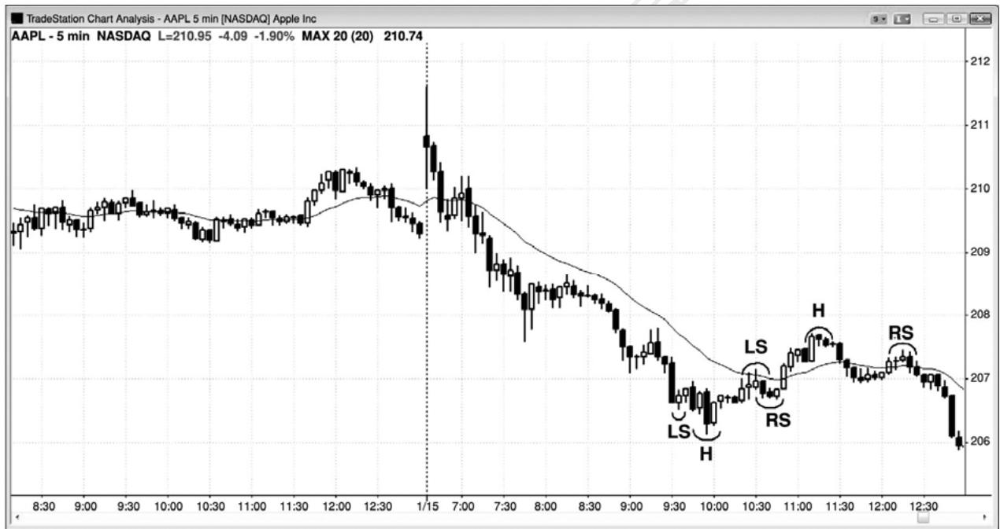
如图 20.3 所示，苹果（AAPL）中形成一个失败的头肩底和一个头肩顶空头旗形。市场处于开盘起空头趋势中，尝试形成一个头肩底（左肩（LS）、头（H）和右肩（RS）），不出所料，该形成未能使市场反转，而是演变为一个更大的空头旗形。该楔形空头旗形的第三次上推成为一个头肩顶空头旗形的头部。那个头肩顶的头部位于一波两条腿反弹的终点，那波反弹在太平洋标准时间上午 11:15 的那条第一均线缺口棒处终止。在那个头部之后，市场底图形成一个更高低点，但是以失败告终，那么小型反弹成为右肩，是截止头部的通道之后的一个突破回撤。突破引出对空头低点的测试，该测试形成于强空头趋势中的第一均线缺口棒之后，
是意料之内的事。
第四部分 交易区间
对交易区间最宽松、最有用的定义是，它就是一段双向交易区。它可以小到只有一棒（一个十字星），也可以大致包括你的屏幕上的所有棒线。它可能基本水平，表明多空双方势均力敌，也可能略有倾斜。如果它向上倾斜，那么多方比较积极。如果它向下倾斜，那么空方更强。如果它的斜率比较大，那么应该把它看作一条趋势型通道，而不是一段交易区间。它可能包含持续很多棒的非常大的波段，也可能非常紧凑，每个波段只持续一两棒，形成一条很窄的通道。当它水平时，包含它的线是支撑线和阻力线，下面一条是支撑线，上面是一条是阻力线。
术语交易区间通常用于图表上不表现出趋势用大致水平的任意部分，但是，使用更宽松的定义，对于交易者来说更为有用，因为一旦你知道存在双向交易，你就能够寻找机会在两个方向交易。很多初学者非常急切地寻找反转，禁不住在市场很可能从趋势向交易区间转变时做反转交易。但是，一旦有足够的证据表明市场正在从趋势向交易区间转变，那么常常会出现高胜率的逆势刮头皮架构，甚至是波段交易架构。关键是在操作前等待足够的证据。有些形态通常不被看作交易区间，但实际上符合双向交易正在发生的较宽松的定义，大部分时间都是那样。趋势拥有简短的尖峰，其中几乎没有双向交易，但趋势中的大部分价格行为都有着某种双向交易在发生，所以是某种类型的交易区间。
回撤是一段交易区间，其中交易者们认为趋势很快会恢复。传统的交易区间是存在不确定性，趋势可能恢复或反转，但大部分突破尝试失败的区域。多头趋势中的上升通道和空头趋势中的下降通道是倾斜的交易区间，因为都包含双向交易，但趋势型交易者比逆势交易者要更积极。它们也是仍不明显的交易区间的第一条腿。举例说明，在市场以一系列尾线短小、几乎没有重叠的大型多头趋势棒形成上涨尖峰之后，它很快会进入下一阶段，棒线之间存在更多重叠、尾线变长、出现一些空头实体、斜率变小、出现一些回撤，即便它们只持续一棒。这是一条多头通道，但所有通道本质上都是交易区间，因为它们代表着双向交易。如果通道陡峭地上扬，而且回撤幅度很小，那么表明空方存在，但是被多方压倒了。通道由一系列小型交易区间构成，每个小型交易区间之后是一个小型突破，引出另一个小型交易区间。随着通道成熟，当多方积极性下降，空方积极性提高时，波段变得越来越大。市场将向下突破通道，然后通常会测试通道底部。在那一点，市场形成了一条上涨腿（多头通道）和一条下跌腿（对通道底部的测试），大部分交易者将把整个形态看作一段交易区间。市场可能形成一个双重底多头旗形，或者在某个点处，空方将接过市场的控制权，出现一个下跌尖峰，随之上
述过程反转。
下面是交易区间通常表现出来的一些特征：
对于即将发生的突破的方向，存在不确定感。实际上，不确定性是交易区间的标志；每当大部分交易者不确定时，市场就是在交易区间内（趋势拥有确定性和紧迫感）。不过，交易区间通常最终是一个趋势恢复架构，也就是说它只是更高时间框架图表上的一个回撤。
几乎所有交易的胜率看起来都不超过 55%。
同时有合情合理的做空和做多架构形成。
在你的屏幕上有几次方向变化。
整个价格行为基本水平，屏幕左侧和右侧边缘的棒线位于屏幕竖直方向的中间三分之一。
大部分棒线都位于屏幕中间，顶部和底部附近有快速反转。
市场一再猎杀止损，常常是以强趋势棒，但是在下一棒就反转方向。举例说明，市场形成两条空头趋势棒，跌至一个强波段低点下方，但是，市场在下一棒向上反转。
有很多多头和空头趋势棒，但几乎没有超过三条或四条的连续多头趋势棒组合或空头趋势棒组合。
很多棒线拥有突出的尾线。
很多棒线与前一棒的重叠达 50%，甚至更多。
P176
存在很多区域，其中有三条或多条棒线彼此重叠幅度为 50%或更多。
存在很多十字星，可能很大，也可能很小。
均线相对水平。
向左观察，屏幕上的价格行为也是在交易区间内。
刚刚出现一个令人印象深刻的买进或卖出高潮。
存在真空效应，结果在顶部形成强多头尖峰，在底部形成强空头尖峰，多头尖峰和空头尖峰都未能突破，而是回转进入区间。
很多腿细分为两条较小的腿，然后反转进入反方向的两条腿运动。
底部的低点1和低点2做空架构，以及顶部的高点1和高点2买进架构，通常失败。
信号棒常常看起来很弱，甚至二次入场的信号棒也看起来很弱。
任何双向交易区域，即便只持续了一棒，也是一个交易区间。当你把一个交易区间看作回撤时，你是认为趋势很可能会快速恢复，所以你很可能只在趋势方向上交易。每个交易者将拥有不同的标准，但是，一般而言，如果你是 60%或更确信在入场后不久趋势将会恢复，那么你就是认为该形态是一个回撤。相反地，如果你不太确定在你入场之后将会出现突破，那么该形态就是一个交易区间。交易区间是这样一种回撤：持续时间太长，失去了它的短期预期能力，而且 80%的向上或向下的突破尝试都将失败。如果你在底部买进，那么市场或许会向顶部运动，但是，如果市场向下突破，那么将形成一个卖出架构，市场将返回你的做多入场区域。如果你在顶部做空，那么市场或许会下跌，下跌幅度可能足以做一笔刮头皮交易，但是接下来又上涨至你的入场点附近。最后，几率偏向于交易区间之前的趋势恢复，因为交易区间只是更高时间框架图表上的一个回撤；然而，如果它在你交易的图表上持续数天，而且你只选择顺势交易，等待突破，那么你将错过很多交易机会。虽然你可以把它作为更高时间框架图表上的一个回撤来交易，但是大部分交易者发现，如果他们只观察和交易单张图表，那么更容易赚钱，即使他们注意到更高和更低时间框架图表上出现的架构。
对于回撤，你通常应该准备仅在趋势方向上交易，除非回撤幅度很可能大到足以做一笔逆势刮头皮交易。大部分交易者仍然应该等待顺势架构，因为除了最有经验的交易者之外，逆势刮头皮是一种失败的策略。如果你逆势交易，那么仅当你认为市场将进入交易区间而不是回撤时，才可进行。对于交易区间，你可以在两个方向交易，知道大部分向上和向下的突破尝试都将失败。但是，如果在多头市场中的一个交易区间的底部出现一个特别强的架构，那么你可以考虑把全部或部分交易波段化。类似地，如果在交易区间的顶部出现一个强卖出架构，而且该交易区间之前是一轮强劲的空头趋势，那么你应该把部分或全部空头头寸波段化。
在多头趋势的大多数交易区间中，最后一条下跌腿是一条空头通道，是空方最后一次破釜沉舟地尝试制造一个顶部和一轮新的空头趋势。空头通道是一个多头旗形。多头可以在交易区间底部的向上反转买进，也可以在随后通常会出现的突破回撤买进。当交易区间处于多头市场中时，反弹倾向于比回撤强，尤其是当交易区间靠近其终点时。另外，每一波回撤的作用都类似于一个旗形。下一波反弹是从对那个多头旗形的突破开始的，而且下一波回撤是一个突破回撤架构，也是另一个多头旗形。在那些多头旗形中，将有一个旗形是最后一个，它的突破将成为多头趋势恢复过程中的下一条上涨腿。由于所有交易区间都是更高时间框架图表上的回撤，所以那个突破也是对那个更高时间框架多头旗形的突破。反过来对于空头趋势中的交易区间也是正确的，其中的最后一条腿通常是一条多头通道，是一个空头旗形。
通道最终通常演变为交易区间，交易者们总在寻找最简单的转变信号，因为通道是一轮趋势，所以与在交易区间中相比，交易者们不大愿意在通道中做逆势交易，而在交易区间内，交易者们可以在两个方向上交易。一旦交易者们认为通道已经变成一个交易区间，那么将会在相反方向上出现尖峰和通道。有时，趋势会反转（大部分反转形态是交易区间），但更为可能的是，市场在交易区间内至少再运行 10 棒或 20 棒。
每条通道都存在双向交易，通常是交易区间的起点。但是，只要高点和低点仍然呈趋势变化，那么通道就依然有效，市场就仍未转变为交易区间。举例说明，在一条上升通道内，当市场靠近最近的更高低点时，多头将在所有回撤积极买进，因为他们希望每个人看到市场仍然处于通道内，那是一种类型的多头趋势，而不是交易区间。这将使得其他交易者更可能买进，上涨更可能继续，他们的利润就会增加。有时，市场会跌破一个微型更高低点，并找到买家。以这个新的低点为基准，我们可以绘制一条新的、更为水平的趋势线（从通道底部开始），和一条斜率更低、更宽的通道。那表明价格行为正变得越来越具有双向性，所以更可能是交易区间，而不是仍然在通道内。一旦市场明确地进入交易区间，交易者们就开始在反弹卖出，那将降低多头推动市场上涨的能力，限制他们的获利能力。只要他们能够不断推动市场趋势上涨，他们就知道大部分交易者将只准备买进。市场常常会回撤至最近一个更高低点，形成一个双重底多头旗形。对于多头来说，这是可以接受的，因为他们知道，那是一个看涨架构，如果那个架构触发（超越信号棒的高点），那么将预期市场向上形成一波测量运动。至少他们对于反弹可能有多高做到了心中有数，这将带给他们一个获利了结目标。
P177
当市场处于趋势的尖峰期内时，它是极端单向的，回撤是由机构的获利了结制造的，不是由他们的反向交易引起的。随着回撤越来越深，逆势交易者们开始刮头皮。一旦回撤增长进入交易区间，将有更多的逆势交易者做刮头皮交易，有些交易者则逐步增加自己的空头仓位。对于趋势能够走多远，顺势交易者们变得越来越没有信心，他们从波段交易转变为越来越多的刮头皮交易。那便是在交易区间内，多空双方都是以刮头皮为主的原因。双方都在低买高卖。底部的买进是多头在新建多头头寸和空头在获利了结，顶部的卖出是空头在做空，多头在获利了结。由于交易者的工作就是跟随机构，所以它也应该刮头皮，在区间的底部附近买进，在顶部附近卖出。每当市场处于交易区间内时，交易者们应该马上想到，“低买、高卖，和刮头皮”。
交易区间拥有双向交易，在底部附近，多头要强一些，在顶部附近，空头要强一些。交易区间中的每一波反弹实际上都是一个空头旗形，每一波抛盘实际上都是一个多头旗形。因此，交易者们在区间顶部的交易方式，与在空头趋势中的空头旗形的交易方式相同。他们在棒线的上方和下方卖出，在阻力位上方和支撑区下方卖出。他们在棒线上方卖出，包括在强多头趋势棒上方卖出，在每一种类型的阻力位上方卖出，因为他们把每一波上涨都看作是向上突破区间顶部的尝试，他们知道大部分突破尝试失败。他们在棒线下方和每种类型的支撑位下方卖出，因为他们把每一波下跌等同于空头趋势中空头旗形底部的突破。他们预期对交易区间的向上突破将会失败，空头旗形突破将会成功，市场很快便会向下反转，测试区间底部。
他们在区间底部的交易方式，与在多头趋势中的多头旗形的交易方式相同。他们在棒线的上方和下方买进，在阻力位上方和支撑区下方买进。他们在棒线下方买进，包括在强空头趋势棒下方买进，在每一种类型的支撑位下方买进，因为他们把每一波下跌都看作是向下突破区间底部的尝试，他们知道大部分突破尝试失败。他们在棒线上方和每种类型的阻力位上方卖出，因为他们把每一波上涨等同于多头趋势中空多头旗形顶部的突破。他们预期对交易区间的向下突破将会失败，多头旗形突破将会成功，市场很快便会向上反转，测试区间顶部。
当图表显示趋势运动时，交易区间相对较小，最好看作回撤，因为它们只是趋势中的暂停，之后将测试趋势极点。如果没有出现测试，而且市场反转，那么最初看起来是回撤的形态已经演变为一个反转形态。如果图表包含穿越整个屏幕的上涨波段和下跌波段，那么多方和空方都未主宰市场，他们在轮流控制市场，那么市场就是处于交易区间内。第个波段都是一轮小型趋势，存在交易潜能，特别是在较小的时间框架上。在较大的时间框架上，交易区间将是趋势中的回撤。举例说明，5 分钟图上显示的大型交易区间，很可能只是 60 分钟图上一轮趋势中的一波回撤，而 60 分钟图上的一段交易区间，很可能是日线图或周线图上的一波回撤。
很多交易者使用描述性名称，比如旗形、三角旗形或三角形，但叫什么名字并不重要。重要的是双向交易正在发生。市场处于突破状态，在某个点处，它将向某个方向突破，进入另一轮趋势。多空双方都认为这一价格区域是一个很好的价值区域，双方都正在建立交易。价值存在于极点。市场要么太便宜，比如在支撑位，要么太昂贵，比如在阻力位。对于多空双方而言，交易区间的中点也是一个价值区，因为双方都把它看作一个极点。多方认为市场正在筑底，所以是在一个低点，空方认为市场正在筑顶，所以是在一个高点。如果市场小幅下跌，那么空头的卖出就会少一些，而多头在这个更好、更极端的价位将变得更加积极。这将倾向于拉升市场返回区间中点。如果价格上涨，靠近区间顶部，那么多头的买进就减少了，因为他们认为市场有点昂贵。相反地，空头将在这些更好的价位更积极地卖出。
甚至是陡峭的通道也代表着突破状态。举例说明，如果有一条陡峭的多头通道，市场可能向上突破通道顶部，趋势可能向上加速。当这种情况发生时，突破通常在一两次尝试后失败，而且通常是在 5 棒之内失败，如果市场反转回到通道内，那么通常会刺穿通道另一侧轨线，然后常常是更大的调整或反转。即便突破尖峰持续若干棒，也通常很快便出现回撤，测试通道，市场常常重新进入通道，向另一侧突破，然后是一波至少两条腿的调整，有时趋势反转。
在 5 分钟电子迷你图表上，当市场处于相对紧凑的交易区间内时，其中的波段只有 2 到4 棒长，然后市场便向区间另一侧反转，那么交易区间的长度通常比看起来要长很多。很容易把那种价格行为简单地功因于轻量交易的随机漂移；但是，如果你观察成交量，你常常会发现那些棒线的平均成交量为 10,000 份合约，甚至更多。这不是轻量交易。这可能是在区间内，很多机构正运行着买进程序，而其他机构正运行着卖出程序。当市场接近区间顶部时，卖出程序正在理积极地卖出；当它靠近底部时，买进程序正压倒卖出程序。双方都未能获胜。在某个点处，要么在区间顶部，买进程序压倒卖出程序，市场突破进入一波反弹，要么在区间底部，卖出程序压倒买进程序，市场将形成空头突破。但是，在突破之前，交易区间可能会形成十几个或更多的上涨和下跌波段，由于那十几个左右的突破尝试失败后，最后一个才终于成功，所以最好打赌它们失败，而不是在每个突破尝试入场。重要的是明白，突破在每张图表上都很常见，但大部分突破都将失败，正如在第一部分关于突破的章节中所讨论的那样。
P178
交易区间总是在努力突破，因此，向顶部或底部运动的波段常常拥有很强的动能，表现为一两条，有时是三四条尾线短小的大型趋势棒。在测试区间底部时，空头努力制造足够的动能来恐吓多头，并且吸引其他卖家，于是将形成一个带坚持到底的突破。但是，当下跌腿开始时，多头看到正在增强的下行动能，正在预期最好的价位会在哪里，以便可以再次积极买进。空头也在寻找好的价位以便获利了结。还有比向下突破一个波段低点的几条大型空头趋势棒更好的吗？特别地，突破发生在另一个支撑区，比如趋势线或测量运动目标。多空双方都在等待市场测试区间底部，而不在意它是过冲还是欠冲。当市场向区间底部下跌时，多头和空头预期市场将进一步下跌，以制造一个明确的测试，当他们认为自己如果稍等一会儿就能在更便宜的价位买进时，他们就没有理由现在买进。当这些机构交易者像这些闪在一边时，市场中就形成相对失衡，随着市场下跌，（下行）动能常常会恢复。这就是真空效应，它快速吸引市场向区间底部运动。有些大型程序是动能型的，当动能很强时积极卖出，继续卖出，直到下行动能枯竭。这将制造大型空头趋势棒，然后市场向上反转。当市场测试区间底部时，常常见到一两条大型空头趋势棒。一旦市场到达某个支撑位，那通常是某个小型测量运动目标，那么买家就会入场积极买进。空方买回他们的空头头寸获利，多方则买进新的多头头寸。这使得下行动能停止，致使动能型交易者也停止卖出，开始买回他们的空头头寸。当那么多大型玩家积极持续买进时，市场开始了一个上升波段。
如果你是一个机构多头或空头，那么这是完美的。你希望现在买进，市场正位于区间底部，还有比过度伸展的空头棒更好的买进信号棒吗？你非常相信市场即将上涨，因为你刚刚看到一个下跌尖峰，显示出极端的看跌力量。这是一个很棒的买进机会，因为你认为价值非常高，你知道自己是正确的，市场只会在这个低位暂时停留。机构交易者像是突然从某个角落冒出来，积极买进。有的会在最后一条大型空头趋势棒的收盘买进，有的会等等看下一棒是否是一条暂停棒。如果下一棒拥有一个多头收盘，那么他们甚至会更加自信。如果它是一条暂停棒，那么他们将会把它看作是空头不能坚持到底卖出，所以疲弱的额外证据。他们可能还会等待市场超越前一棒高点，形成实际的反转。在所有这些征兆处，在所有时间框架上，都会有大型多头和空头在买进，他们将以每一种能够想像到的信号入场。
有些正在获利了结的空头，在市场下跌时，他们是逐步加仓的。这使得他们的平均入场价位也跟着降低，迫使他们在市场向上反转至他们的入场价位前积极地全部抛出自己的空头头寸，从而确保在离场后总体获利。由于空头正在买进而不是卖出，多头也正在积极买进，所以出现相对的买进失衡，市场再次朝着区间顶部向上运动。相反的过程发生在交易区间的顶部，强多头趋势棒常常引起大量的卖出，多头获利了结，空头建立新的空头头寸。
因此，交易区间总是快速向顶部和底部运动，总是看起来即将突破，结果却是反转。这也解释了为什么大部分交易区间突破失败，为什么有多头趋势棒突破顶部，空头趋势棒突破底部。市场越靠近区间的顶部或底部，就有越多交易者相信它将超越原来的极点，至少超越一两个跳动。交易区间的顶部和底部有一种磁性拉力，当市场逐渐靠近顶部或底部时，那种拉力变得越来越强，因为预期市场反转的大型交易者们只是在等待最好的价位，然后他们突然积极入场，令市场反转。这对于所有交易区间都是正确的，包含多头和空头通道、三角形、以及多头和空头旗形。
一定不要被向着交易区间顶部或底部运动的强动能波浪所套。你需要跟踪机构正在进行的操作，他们正在做的是在区间顶部的强多头趋势棒卖出，在底部的强空头趋势棒买进，刚好是市场看起来有能力突破时。只有能够非常熟练地阅读图表的交易者才应该在突破棒的收盘做反向交易。如果交易者们等待市场回转进入区间时入场，那么几乎所有交易者都更可能成功。另外，他们仅应在信号棒不是太大时选择交易，因为他们需要在靠近区间极点的价位入场，而不是在靠近区间中点的价位入场。
最终有一个突破将会成功，但是前 5 到 10次尝试都会看起来非常强，但以失败告终。因为这种数学概率，所以预期突破失败要好得多。当成功突破发生时，准备在回撤、甚至在突破期间进入新的趋势，前提是突破看起来足够强，而且整个走势使得突破很可能成功。但是在那之前，一直要跟随机构；他们刚刚能够在区间顶部或底部制造一个反转（一个失败的突破），你就要选择反转入场。在第一部分关于突破的章节中讨论了成功突破一般看起来是什么样子。
P179
由于多头趋势中的交易区间是多头旗形，而且它只是较高时间框架图表上的一波回撤，所以交易者可以设定止损单在突破买进，将保护性止损设在交易区间的底部下方较远处。任意一个突破成功的概率大约是 20%，但是市场最终向上突破的概率大约是 60%。但是，在多头趋势恢复之前，市场可能向上和向下突破若干次，所以，如果交易者们希望在突破买进，而且不希望被止损踢出，那么他们需要把保护性止损设在交易区间下方足够远的地方，从而不被反复失败的向下突破止损踢出。很少有交易者愿意冒那么大的风险，等待那么长时间，所以大部分交易者不应在大多数交易区间突破买进。有时，多头趋势中交易区间的向上突破是一个很好的止损入场点，但是仅当突破之前，多头趋势已经明确地开始恢复时。即便好样，通常最好在多头趋势正在恢复时在交易区间内入场，或者等待突破，如果突破非常强劲，那么就在突破后买进，否则就在突破回撤形成时，在突破回撤买进。
媒体声称交易者们就像是在恐惧和贪婪之间摆荡。对于新手来说，那或许是正确的，但是老手却几乎不会感到恐惧和贪婪。另一对情绪更为常见，也更为有用：不确定性和紧迫感。趋势是一个确定性的区域，至少是相对确定。你的个人感觉就能够告诉你，市场是更可能处于趋势中，还是只是交易区间内的一条很强的腿形。如果你有一种不确定的感觉，那么市场就更可能是在交易区间内；相反地，如果你有一种紧迫感，而且你正希望出现回撤，那么市场就更可能是在趋势中。每一轮趋势都是由一系列尖峰和交易区间构成，而且尖峰是短暂的。在尖峰期内，概率拥有方向性偏见。也就是说，在多头趋势的尖峰期内，市场在下跌 X 个跳动前上涨 X 个跳动的几率大于 50%，如果趋势强劲的话，那么该几率可能是 70%或更高。多空双方都认为市场需要运动至一个新的价位，在那个价位，市场又返回到不确定状态。交易区间是不确定性区域，每当你对市场方向不确定时，它很可能就是在交易区间中。在交易区间的中点，市场上涨或下跌 X 个跳动的概率通常约为 50%。这一概率存在暂时的波动，但大部分波动只是持续几个跳动，不足以产生可获利的交易。这种对不确定性的探索，是测量运动的基础。在概率降至低于 50－50 之前，市场将继续它的高概率方向性运动。当概率小于 50－50 时，市场很可能反转（市场反向运动的概率较大）。大部分时间里，那将发生在某个支撑或阻力区，比如先前的波段点或趋势线或趋势通道线，而且大部分时间里，那将是在某个测量运动的（目标）区。反转是向着即将成为交易区间中点的某个价位运动，在交易区间中点，市场反向运动X个跳动前上涨或下跌X个跳动的几率是50%。
当你对交易区间的观点完美中立时，等距运动的方向性概率是 50%，市场位于即将成为区间中点的价位附近。当市场向着区间顶部运动时，几率偏向于市场下跌，市场上涨 X 个跳动前下跌 X 个跳动的几率是 60%或更高。在靠近区间底部处，正好相反，方向性概率偏向于上涨。如果区间之前是一轮很强的多头趋势，而且没有明确的顶部，那么方向概率就偏向于多头，甚至是当市场处于交易区间中部时。如果趋势非常强，那么区间中点的方向性概率可能是 53\~55%，虽然不可能非常肯定。注意，交易区间是更高时间框架图表上的延续形态，如果之前是一轮很强的多头趋势，而且没有明确的顶部，那么向上突破的可能性就比较大。在一轮强多头趋势之后，当市场跌至区间底部时，等距运动的方向性概率大于在空头趋势之后形成的交易区间底部的等距运动的方向性概率，所以上涨的几率不止 60%，可能是 70\~80%。实际上，下跌X个跳动前上涨X个跳动的两到三倍的几率甚至可能是70%或更高。举例说明，如果交易区间的高度为 50 个跳动，你已在向区间底部的两条腿回撤的多头反转棒上方买进，那一棒的高度为 8 个跳动，那么市场在击中入场点下方 10 个跳动的止损之前上涨 20 或 30 个跳动的几率可能是 70%。类似地，在区间的顶部，等距运动的方向性概率小于空头趋势之后形成的交易区间，市场上涨 X 个跳动前下跌 X 个跳动的几率不是 70\~80%，可能略大于 60%。虽然没有人能够知道精确的几率，但注意到这种偏向是有帮助的，因为当你考虑交易时，它应该影响到你。在大型多头市场中，与在交易区间的顶部做空相比，你应该更愿意在交易区间的的底部买进。
多空双方都不知道突破的方向，但是都对在区间内交易感到舒适；由于在区间顶部，多方倾向于买得较少，空方倾向于卖得更多，而且在底部刚好相反，所以市场大部分时间都在区间的中部。这一舒适区域拥有磁性拉力，每当市场远离它时，就会被拉回。即便有成功的突破运动了若干棒，市场通常会被拉回区间内，那是最终旗形的基础，将在第三本书中讨论。我们还常常看到一个方向的突破运动了若干棒后反转，然后向相反方向突破，然后回撤至区间内。交易区间的磁场效应可能会在若干天里都对市场产生作用，常常看到市场趋势远离一段强交易区间，比如持续 10 棒或更多棒的相对紧凑的区间，在两三天后又回到区间之内。
P180
二是什么使得交易区间内的多头和空头改变他们的观点，最终允许突破成功呢？特殊情况下，是新闻事件引起的，比如人们预期联邦公开市场委员会（FOMC）的报告在一天中的特定时间公布，但大部分时间里，突破是出乎意料的。电视上总会给出与新闻相关的理由，但大部分时间里，那可能与市场走势毫不相干。一旦市场突破，CNBC 将会找某位专家来自信的解释那是由某条新闻事件直接引起的。反之，如果市场向相反的方向突破，那么那位专家将对相同的新闻事件做出相反的解释。举例说明，如果市场在 FOMC 降低利率的报告发布时向上突破，我那里专家会说较低的利率，对市场有益。如果在同样的减息报告下市场向下突破，那么那位专家会辩称降低利率证明了联邦储备委员会认为经济疲弱，所以市场是估价过高了。两种解释都是不相干的，与市场中发生的事情毫无关系。从来没有什么事情是那么简单，不管怎样，那与交易者没有什么关系。每天大部分的成交量都是由程序产生的；在突破前和突破进行时，有几十个大型程序在运行，他们的设计是由各个公司独立完成的，每个程序都在努力从其他程序身上赔钱。交易逻辑背后的程序不得而知，所以并不相关。对于交易者们来说，最重要的是净结果。作为一名交易者，你应该跟踪机构，如果他们在驱动市场上涨，那么你应该跟随他们，做一名买家。如果他们正在驱动市场下跌，那么你应该跟随他们，做一名卖家。
突破在成功之前，几乎总是会经历10棒或更多棒，那可能是在新闻发布之前一个小时。市场已经对突破方向下定决心，而不管新闻是什么，如果你能够阅读价格行为，那么你常常可以在突破产生前站在正确的一方。
举例说明，如果多头认为市场此时早该向上突破，从而开始变得不耐烦，那么他们将开始抛售自己的多头头寸。这将增加空头引起的卖压。另外，在准备再次买进之前，那些多头很可能希望市场降至明显较低的价位，他们在区间底部的缺席将排除买压；结果价格下跌，在一轮空头趋势中降至更低价位，在那里多头再次看到价值，另一个交易区间将会形成。在向上突破中，发生的情况刚好相反。空头不再愿意在区间内做空，他们将买回自己的空头头寸，增强了多头的买压。他们仅在明显更高的价位才会准备再次做空，那将制造一个交易清淡区，在多头突破中，多头推动市场快速上涨。市场将在多头趋势中继续上涨，直至到达某个价位，在那一价位，空头再次认为存在做空价值，多头开始对自己的头寸获利了结。然后，双向交易恢复，另一个交易区间将会形成。
如果横向价格行为已经持续了 5 到 20 棒左右，而且非常紧凑，那么交易者必须特别小心，因为多空双方处于非常紧张的平衡中，在这种情况下做突破交易可能会令你代价惨痛，因为在每一波短暂的上涨运动中，空头都在积极卖出，新的多头快速离场。结果使得区间顶部的棒线带有尾线。类似地，每一波迅猛的下跌都快速反转，为区间底部的棒线添上了下尾线。然而，也有方法可以在这种类型的市场中交易获利。有些公司和很多交易者每下跌几个跳动便对多头逐步加仓，对空头逐步减仓，市场每上涨几个跳动时，操作相反。然而，这种方法非常乏味，而且对于个人交易者来说，获利甚微，一旦一个成功突破最终产生，他们将发现自己因为太过劳累而无法好好交易。
一般而言，所有交易区间都是延续形态，也就是说他们常常是在先前的趋势方向上突破。它们还倾向于在突破时远离均线。如果它们在均线下方，那么它们通常向下突破，如果它们在均线上方，那么它们倾向于向上突破。如果交易区间邻近均线，那么这一点尤其正确。如果他们离均线较远，那么他们可能形成向均线回转的测试架构。如果一个多头波段在交易区间中暂停，那么几率偏向于最终向上突破。但是，在最后突破前，可能要形成若干个失败的顶部和底部突破，有时市场会逆势突破。另外，交易区间持续的时间越长，它就越可能成为一个反转形态（空头交易区间中的累积，多头交易区间中的派发）。这是因为顺势交易者们将开始担心他们不能令趋势恢复，于是他们开始回补，并且停止加仓。由于这些担心，交易者们需要更加谨慎，寻找低风险价格行为架构。五分钟图上持续多个小时、包含很多大的难以研判的波段的交易区间，可能是 15 或 60 分钟图上短小清晰、易于研判的交易区间，所以有时观察更高时间框架会有所帮助。实际上，很多交易者是利用更高时间框架图表交易的。
大部分时间里，你的电脑屏幕上的图表都是处于交易区间之中，多空双方对于价值的看法基本一致。在交易区间内，存在很多小的趋势；在那些趋势内，存在很多小的交易区间。当市场做趋势运动时，多空双方对于价值的观点也是一致的，他们一致认为价值区域在另外某个地方。市场快速向交易区间运动，在那里，多空双方感觉存在价值，他们将在那里争斗，直到明确表明一方是正确的，另一方是错误的，然后市场又开始做趋势运动。
有些交易区间日由两个或三个大的区间波段构成；在那些波段中，市场的行为就像是强趋势。但是，第一个反转通常不会开始于第一个小时之内，而在那之前，趋势日通常已经开始。当一轮趋势开始得太晚时，那一天就很可能成为一个交易区间日，至少会出现第二次反转，并且测试区间的中点。
P181
在一天的中间三分之一时段，从太平洋标准时间上午 8 点 30 分到 10 点 30 分，在趋势不明显个交易日里（换句话说，大部分交易日中），交易者们可能很难操作。如果市场在当日区间的中点附近运动（或者只是在当日区间中的交易区间中部），而且现在是在当日交易时段的中间部分，那么很可能出现紧凑的交易区间，拥有大量重叠的棒线、很长的尾线，以及多个小型反转，大部分交易者将会明智地减少交易数量。在这样的环境下，通常较好的做法是放弃任何不太完美的入场，等待市场测试当日高点或低点。对于仍然不是很成功的交易者来说，不应在市场处于一天交易时段的中间，同时也在当日交易区间的中部时交易。对于交易者来说，仅仅这种改变就可以成为输家和赢家的区别。
有时，电子迷你在中午会形成一个看起来极好的形态，你在入场时得到了 1 个跳动的滑移价差。如果在数秒内市场没有快速向你的利润目标运动，那么你很可能是被套了。在这种情况下，在盈亏平衡点设定限价单离场，几乎总是较好的做法。每当某个形态看起来太好，不像是真的时，显然每个人都会准备入场，那么它很可能正如看起来那样——不是真的。
每当出现一个上涨尖峰，然后又出现一个下跌尖峰时，市场就已经形成一个高潮反转，反过来也是一样，那将在第三本书中讨论。尖峰之后通常是一条通道；但是，由于已经出现两个方向上的尖峰，所以多方和空方将继续积极交易，我们都在努力胜过另一方，在自己的方向上制造一条通道。高潮之后的双向交易通常是在一段交易区间内，交易区间可能短到只有一棒，也可能长到持续几十棒。最后的突破通常会引出一波测量运动，其高度近似等于尖峰的高度。
有时交易区间看起来可能是一个反转架构，但实际上它只是趋势中的一个暂停。举例说明，如果在 60分钟图上有一轮很强的多头趋势，5分钟图上有一个很强的下跌尖峰，那个下跌尖峰持续了若干棒，随后是一波回撤反弹，持续若干棒，然后是第二个下跌尖峰，又持续了若干棒，那么在 5 分钟图上，这个形态可能是极度看跌的，但是在六十分钟图上，他可能只是一个高点2或双重底买进架构。如果ABC形态在60分钟均线处结束，那么这尤为正确。不必观察六十分钟图，是你应该一直关注交易区间之前的趋势方向。这将带给你更多的交易自信，这里他是一个高点2买进行形态，不是一轮空头趋势的起点。
有时，一个空头趋势日的低点，特别是一个高潮极点，可能来自一个小型交易区间，该区间中拥有大型棒线，经常带有很长的尾线或者大型的反转实体。这些反转在顶部并不常见，顶部的高潮强度一般不如底部。这些交易区间也常常是其他信号，比如双重体回撤，或双重顶空头旗形。
虽然交易区间是更高时间框架图表上的旗形，通常会在趋势方向上突破，但有些突破是反向的。实际上，大多数反转形态是某种类型的交易区间。头肩形态是一种明显的交易区间。双重顶和双重底也是交易区间。将在第三本书中关于趋势反转的章节中进一步讨论，但重要的是认识到，趋势内的大部分交易区间都是在趋势方向上突破，而不是引起反转。因此，所有反转形态实际上都是延续形态，他们偶尔未能延续先前的趋势，而是令趋势反转。因此，当你看到反转形态时，寻找顺势入场要比寻找反转入场好的多。这就是说，如果有一轮多头趋势，正形成一个头肩顶，那么当市场试图向下突破时寻找买进信号要比在突破做空好的多。
所有趋势都包含不同规模的交易区间，有些趋势主要由交易区间构成，比如趋势型交易区间日，那在第一本书中的22章讨论过。你应该注意，在大约最后一个小时里，市场常常试着令最后的交易区间反转，所以，如果当天是一个空头趋势型交易区间日，那么就在当天最后一两个小时的当日低点寻找买进架构。
有些经验丰富的交易者擅长预测趋势演变为交易区间的时间，一旦他们认为市场正在演变为交易区间，他们就会对逆势交易逐步加仓。举例说明，如果当天是一个多头趋势型交易区间日，而且突破已经到达根据下侧交易区间投影的测量运动目标，而且如果反弹是在一条相对疲弱的多头通道内，那么空头将会开始在先前的波段高点上方做空。他们还会关注一条相对较大的多头趋势棒，在他的收盘或高点上方做空，因为那可能是一个买进高潮，是多头通道的终点，或者靠近多头通道的终点，因此，是在交易区间的顶部附近。只有非常老练的交易者才应该尝试这样做，那些交易者中的大部分人会交易足够小的规模，如果市场持续走高，他们可以对自己的空头头寸逐步加仓。如果市场真的走高，而且他们逐步加仓，那么一旦市场回撤至他们的第一入场点，将退出整个头寸而获利。其他人将在盈亏平衡点退出第一次入场的交易，继续持有剩余头寸，预期市场将测试通道的底部当多头通道正在形成的时候，新手们将只看到多头趋势，而老手们将看到一个正在形成的交易区间的第一条腿。一旦当日收盘，新手们回过头来看当日的图表，他们将会看到交易区间，并且同意交易区间开始于多头通道的底部。但是，当那条多头通道正在形成时，新手们并未意识到市场同时在一条多头通道和一个交易区间内。作为初学者，他们不应在多头趋势中做空，仅当出现强信号时才应考虑在交易区间内交易，如果是二次信号则更好。做空的老手们是在刮头皮，因为他们认为市场正在进入交易区间，而不是反转进入空头趋势。当市场处于交易区间内是，交易者们通常只应刮头皮，直到下一轮趋势开始，下一轮趋势开始时，他们就可以再次把部分或全部交易波段化。
P182
在交易区间中交易的最难的一个问题是交易区间困境。由于大部分突破失败，所以你的利润目标受到限制，也就是说你在刮头皮。然尔，当你减小自己的回报，不过保持风险相同时，你需要一个更高的胜率来满足交易者方程。否则，你所使用的交易策略最终肯定会使你爆仓。交易区间的困境是你不得不刮头皮，但是刮头皮需要非常高的胜率，在交易区间内，那样高的确定性是不可能长期存在的，因为根据定义，交易区间中是不确定性占主要优势。如果区间特别紧凑，那么成功率甚至更低。提高胜率的一种方法是当市场向不利方向运动时使用限价单入场。举例说明，有些交易者会在看起来疲弱的高点 1 或高点 2 上方做空，这在区间顶部的波段高点或多头趋势棒上方做空。他们还可能在疲弱的低点 1 或低点 2 下方买进，或者在区间底部的波段低点或空头趋势棒下方买进。另一种方法是先建立较小的初始头寸，如果市场向不利方向运动，那么就逐步加仓。
如果区间足够大，那么大部分交易者会在区间顶部的小型空头反转棒做空，或者在区间底部的小型多头反转棒买进，特别是当出现二次入场时，比如在区间顶部的低点 2 做空，或者在区间底部的高点 2 买进。记住，尽管高点 2 和低点 2 架构在交易区间中都是准确的，但是交易方式与在趋势中形成的不同。在一轮多头趋势中，交易者们将会在腿形顶部附近的高点 2 买进，但是在交易区间内，他们仅会在高点 2 出现在区间底部时买进。类似的，空头会在空头趋势底部的低点 2 做空，但是在交易区间内，他们仅会在区间顶部形成的低点 2 做空。
由于交易区间就是一条水平的通道，也应该像其他通道一样交易。如果波段很小，那么你就刮头皮；如果波段很大，你就可以刮头皮，或者把部分头寸波段化，直到相对的一端。如果交易区间非常大，并且已经持续了若干天，那么一整天可能都是强趋势，而仍然在交易区间内。当那种情况发生时，就要向其他趋势日一样交易。如果波段非常小，那么交易区间比较紧凑，那将在第 22 章讨论。区间越紧凑，你就越应该少交易。当市场处于紧凑的交易区间内时，你应该尽量不交易。
当市场处于交易区间内时，就要准备在区间底部买进，在区间顶部做空。一般而言，如果市场已经下跌了 5 到 10 棒，那么就只准备买进，尤其是在区间的底部附近。如果市场已经上涨了5到10棒，那么就只准备做空，尤其是在区间顶部附近。仅当波段大到可以赚取利润时，才在区间中部交易。举例说明，如果交易区间的高度为10个跳动，你不会希望在区间低点上方 6 个跳动买进，原因是市场继续上涨 6 个跳动的可能性不大，而如果你要赚取 4 个跳动的利润，那是市场必须要上涨的幅度。如果交易区间的高度为 6 点，那么你可以在更高低点买进，并且在区间中部入场，因为在市场到达市区间顶部的阻力位前，有足够的空间可以赚取一笔刮头皮的利润。在第一本书中关于通道的章节讨论了如何在通道中交易，由于交易区间就是一条水平的通道，所以交易技术是相同的。
大部分棒线将位于交易区间中部，市场在极点停留的时间非常短。当市场位于极点时，通常是以一条强趋势棒到达那里的，使很多交易者认为突破会成功，而且很强。常常会有三条或更多条大型棒线与信号棒重叠，迫使多头在最高点买进，这通道是一个陷阱。举例说明，假定市场仅仅以几条强空头趋势便快速运动至区间底部，但已经横向运动了几棒，刚好位于均线下方；现在，形成一条强空头反转棒，但它差不多与先前的棒线重叠，入场价将在距那个空头旗形底部约1个跳动之内。在这种情况下，不要做那笔交易。这通常是一个做空陷阱，最好设定限价单在那条空头反转棒的低点买进，而不是设定止损单在它的低点下方 1 个跳动处做空。仅当你能熟练读图时才可做这种反向交易。
最好的入场是区间顶部或底部的二次入场，信号棒是你的交易方向上的一条反转棒，它不太大，而且与前一棒的重叠不是太多。不过，与趋势反转交易相比，交易区间反转交易中信号棒的外形不大重要。区间顶部的做空架构的信号棒常常拥有多头实体，区间底部的买进架构（的信号棒）常常拥有空头实体。强反转棒通常不是强制性的，除非交易者正准备在强趋势中做反转交易。
如果刮头皮，那么大部分交易者将会亏损，即便他们 60%的交易盈利。如果他们的风险约为潜在回报的两倍时，尤其是那样。这就意味着对于交易区间交易，交易者们不得不非常谨慎。由于 80%的突破尝试失败，所以交易区间交易者不得不限制自己的利润目标，很多最好的交易是大的刮头皮交易或小型波段交易。举例说明，如果近期电子迷你的平均日区间约为 10\~15 点，那么平均保护性止损大约是两点。如果交易者们正在交易区间顶部的一条强空头信号棒下方做空，交易区间的高度至少为 6 点，特别地，如果他们正在二次信号交易，那么他们至少有 60%的几率冒两点的风险赚到两点。结果产生最低可获利的交易者方程，所以是一种成功的策略。如果看起来市场可能下跌 4 点，那么交易者们可能在赚到两点利润后把四分之一到一半的头寸了结，然后把剩余头寸波段化，预期产生 4 点的利润。在两点处部分获利了结后，他们可能把止损移至盈亏平衡点，或者他们会把止损从两点调紧至 1 点（4 个跳动）或 5 个跳动。在那一点，他们正冒着 4 个跳动的风险去博取 4 点的利润，即使成功率只有 40%，他们也拥有一个盈利的交易者方程。有些交易者在两点利润处部分或全部获利后，会在最初的入场价位设定限价单再次做空，但这一次的风险只有 5 个跳动左右。他们可能尝试在赚到 2 到 4 点的利润后获利了结，具体情况取决于市场走势。如果入场棒或下一棒成为一条强空头棒，那么他们倾向于继续持有，预期出现更大的运动。
P183
如果交易区间只有 3 点，有时是 4 点高，那么使用止损单入场通常是一种失败的策略。市场是在一条相对紧凑的交易区间内，那将在后面讨论，只有非常老练的交易者才可交易。大部分交易需要使用限价单入场，初学者们永远不应在市场下跌时买进，或者在市场上涨时卖出，因为他们总是会遇到市场向不利方向运动得太远，令他们因恐惧而认赔出场的情况。
无论区间的高度是多少，如果你正准备交易，而且正在测试区间顶部或底部的腿形是在一条紧凑的通道内，那么最好等待突破回撤，那将是一个二次入场。所以，如果市场已经上涨了 10 棒，而且靠近交易区间的顶部，但这 10 棒是在一条微型通道内，那么不要在前一棒的低点下方做空——上行动能太强了。相反地，要等等看这个微型通道突破之后是否会出现回撤。回撤可能是对通道顶部的任意类型的测试，包括更低高点、双重顶或更高高点。然后准备在前一棒下方做空，把保护性止损设在信号棒的高点上方。如果那条信号棒是一条很好的空头反转棒，特别地，如果它不是太大，那么该架构更加可靠。如果信号棒太大，那么它很可能与一棒或多棒重叠太多，将使你的做空入场点位于区间高点下方太远的价位。当这种情况发生时，通常更好的做法是等待回撤，然后做空。
如果有其他证据表明强势空头正在前10棒之内入场，那么任何做空架构也更加可靠，比如在这价位带有很长上尾线的两三棒，或者最近若干棒拥有强空头实体。这代表着卖压正在建立，增加了交易的胜率。类似地，如果你正准备在区间底部买进，在底部这一价位有几棒具有很长的上尾线，或者若干棒具有多头实体，那么就表明多头正变得越来越积极，这种买压增加了多头交易的胜率。如果在你的入场点附近存在支撑或阻力，比如决斗线形态，那么成功率也会增加。
交易区间看起来总是在突破，但大部分突破尝试都以失败告终。极点常常被大型走势棒测试，如果你是一位老手，那么你可以在此类棒线的收盘做反向交易。虽然入场前等待突破失败会较为安全（突破和失败在第一部分讨论过），如果你自信地认为走势棒只是猎杀波段高点上方或低点下方的止损，那么你可以在那一棒的收盘入场，特别地，如果市场向不利方向运动，那么你可以逐步加仓。举例说明，如果市场已经在一段平静的交易区间内度过了三个小时，刚刚形成一波两条腿运动，跌破了先前一个波段低点，而且收盘价位于那一棒的低点，那么你可以在那一棒的收盘以市价买进。如果大部分上涨腿的动能都强于下跌腿，那么胜率就更高，如果那条趋势棒正在测试走势线、走势通道线、测量运动目标或者其他支撑位，那么胜率甚至会更高。
因为并不是所有波段都到达区间的极点，所以你可以考虑逐步加仓。举例说明，如果市场已经上涨 8 棒，正在交易区间的顶部下方形成一个低点 3，那么你可以考虑在低点 3 架构做空，使用一个很宽的止损，当电子迷你的平均区间约为 10 点时，或许会使用 4 点的止损。如果低点 3 成功，那么你就拥有一笔可获利的交易，然后你离场。如果低点 3 失败，那么很可能不久将出现低点 4，那将是成功的。如果那样的话，你就可以在入场点上方、前一棒或波段高点上方、或者在低点 4 信号使用止损单在一定数量的跳动处做空，对空头交易加仓。然后你可以在在区间底部附近退出两个空头头寸，那可能是在第一笔做空交易的入场价位。那么首次入场的交易将会打平，第二次在较高价位入场的交易将会有所获利。交易的逐步加仓和减仓将在第 31 章中讨论。
因为交易区间是双向的，所以回撤很常见。如果你在交易区间内交易，那么你不得不甘愿经历回撤。然而，如果交易区间可能正在向一轮走势转变，那么，如果市场向对你不利的方向运动，你就应该离场，等待二次信号。如果你有能力在市场向不利方向运动时逐步加仓，
那么你的成功率将会更高。
如果市场位于区间底部，下行动能很弱，市场向上反转了一两棒，那么它可能正在形成一个低点 1 做空架构。因为仅应在空头趋势的尖峰阶段中的低点 1 架构做空，而不是在交易区间中，所以这个低点 1 很可能不会令你获利。然后你认为，如果在前一棒低点下方做空，那么在市场下跌 6 个跳动前，很可能会上涨 8 个跳动。那就意味着在前一棒低点或其下方几个跳动处设定限价单买进，将是合理的，预期低点 1 做空架构失败，形成一个更高低点。另外，如果你认为市场正在形成一条多头通道，那么你也是在预期低点 2 失败，所以你可以在低点 2 信号棒的低点或其下方设定限价单买进。在区间顶部，当市场正在向下反转，形成低胜率的高点 1 和高点 2 架构时，你可以使用刚好相反的操作。在高点 1 或高点 2 信号棒的高点或略高处设定一张限价单做空。
由于交易区间中的腿形常常可以细分为两条更小的腿形，所以你可以在前一腿形突破时做反向交易。通常，仅在强多头趋势中的波段高点被向上突破时买进才会产生可获利的交易，仅在强空头走势中的波段低点被向下突破时做空才会产生可获利的交易。如果市场只是从交易区间中的第一条下跌腿回撤，那么在第一条腿的底部被向下突破时入场做空，所得交易的成功率将很低。相反地，你可以考虑在那个低点下方几个跳动处设定限价单买进，预期出现一波刮头皮式上涨。
P184
因为大部分突破尝试失败，所以一定不要在一笔交易中过度停留，希望出现成功的突破。准备在刮头皮利润目标或市场测试区间顶部时退出多头交易，使用限价把获得刮头皮利润的空头交易获利了结，或者在市场测试区间底部时把空头交易获利了结。永远不要依靠输后加倍的策略。这将在第 25 章中讨论，那是一种赌博术，如果前一笔交易亏损，那么就把下一笔交易的规模加倍，甚至加至三倍。如果你一直亏损，那么就一直将前一笔交易的规模加倍或三倍，直到获胜。当你考虑使用这种方法时，市场几乎处于紧凑的交易区间内，你很可能会连续亏损 4 次或更多次；然后你便会放弃那种方法，因为它需要你交易的合约数量远远超出你在情绪上能够控制的规模，这将给你带来巨大的损失。突破或盈利交易一直没有按预期的出现，市场中无法持续行为的持续时间，远比你账户的持续时间要长。精挑细选，只选择合理的入场，永远不要因市场早该出现一笔好交易的想法而入场。
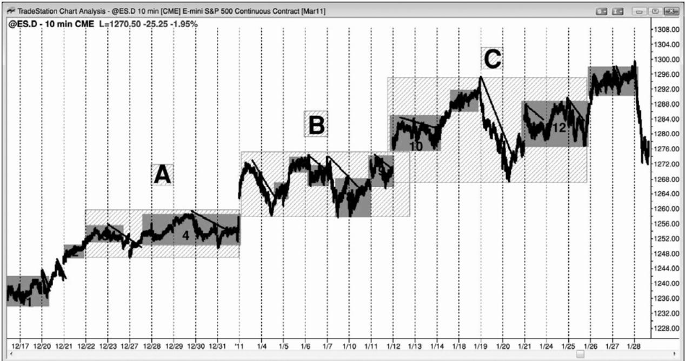
市场由交易区间构成，交易区间之间由短暂的趋势分开，每个交易区间都是由更小的走势和交易区间构成。图 PIV.1 是一张电子迷你的 10 分钟图，显示出大约 6 周的价格行为。如果交易者只观察包含一天半数据的 5 分钟图，那么很容易忽略大的画面。有些交易日是小型交易区间日，但那些交易日是在一轮大型多头市场的背景中。大的交易区间用字母标注，小的交易区间用数字标注（数字指的是交易区间，不是棒线）。虽然交易区间一再试图突破顶部和底部，而且那些尝试中有 80%会失败，但是当突破真的到来时，通常与交易区间之前的走势方向相同。大部分反转形态是交易区间，比如最右边的交易区间（13），但大部分反转尝试转变为旗形，在趋势方向上突破。
当市场处于交易区间内时，交易者们可以选择在两个方向上交易，每笔交易寻求较小的利润，但是在多头趋势的交易区间底部形成一个很强的买进架构时，交易者可以把部分或全部交易波段化。举例说明，在大交易区间 B 中有三次下推，形成一个三角形，每次下推都是测试大交易区间 A 的顶部。小交易区间 8 也有一个双重底，它是交易区间 6 之后市场下跌形成的一个多头旗形。日内交易者可能做一笔多头波段交易，直到当日收盘，但是，当看到这是一个很好的买进架构，将产生一笔持续若干天的交易时，交易者们愿意持有隔夜头寸。
注意，大多数交易区间中，最后一条下跌腿是一条空头通道，是空方最后一次破釜沉舟地尝试制造一个顶部和一轮新的空头趋势。空头通道是多头旗形。多头可以在交易区间底部的向上反转买进，也可以在随后通常会出现的突破回撤买进。反过来对于空头趋势中的交易区间也是正确的，其中的最后一条腿通常是一条多头通道，是一个空头旗形。
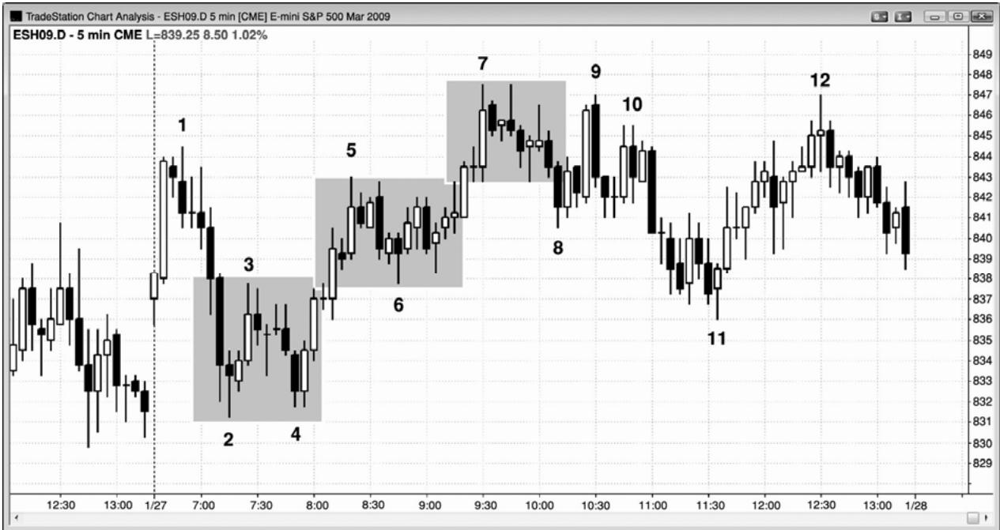
（开盘后）头几个小时内的多个反转，通常会使当天成为一个交易区间日。大型交易者们在进入那种交易日时常常预期成为交易区间日，当足够多的大型交易者们那样预期时，他们的刮头皮和反转常常真的使当天成为一个交易区间日。如图 PIV.2 所示，今天开盘向上突破，然后在棒 1 向下反转，在棒 2 向上反转。向上反转在棒 3 失败，尝试形成一条空头通道，空头通道在棒 4 失败，市场再次向上反转。截止棒 5 的上涨尖峰沿途出现两次暂停，显示出市场的犹豫。在上涨尖峰之后，市场横盘运动了约 10 棒，并且多头旗形内有很多小型反转，还有 5 个空头实体，再次表明市场具有很强的双向性，那是交易区间的标志。棒 7 是一条多头趋势棒，创出当日新高，但紧接着形成一条空头内包棒，而不是两三条多头趋势棒。然后市场形成几个大型十字星；其中两个拥有很长的上尾线，表明交易者们在那些棒线的收盘积极卖出（卖压）。这表明当日高点处空头非常强，那是交易区间中常常发生的。等距运动的方向概率上升，偏向于空方。在这种情况下，上涨两点前下跌两点的几率可能是 60%。虽然不需要准确地知道胜率，但交易者们相邻空头拥有那样的优势。在这一点处，大部分交易者们怀疑当天是一个交易区间日，市场跌破区间中点的几率很高。如果交易者们在棒 7 之后的任意一点做空，冒大约两到三点的风险，那么他们可能拥有大约 60%的几率市场测试当日中点下方，根据他们的入场点不同，将下跌 5 到 8 点。在胜率为 60%的情况下，冒两点的风险博取 5 点的利润，是一笔很棒的交易。
交易区间日的当日中点是一个磁力位，通常会在一天中被反复测试，包括在突破至新高之后。另外，由于交易区间日通常在当日区间的中点收盘，所以准备在市场测试极点时做反向交易，比如在棒 7、9、10 和 12。交易者们正在波段高点上方做空，比如在棒 1、3和5上方，而且他们正在加仓，可能是在高出一两点处。如果他们加仓，那么很多交易者可能会在市场返回最初入场价位时退出部分或全部头寸。这将成为一笔盈亏平衡交易，但是他们在较高价位入场的交易将会获利。如果市场立即向他们的方向运动，那么他们会把大部分或全部头寸以刮头皮交易了结，因为在交易区间日，最好做刮头皮，除非你正在当日的最顶端或最底端交易，在那里你可以把部分头寸波段化，预期市场测试当日中点，甚至是测试相对极点。多头在棒6和棒8下方买进，很多人愿意随着市场下跌逐步加仓。
总之，采用与趋势日相反的操作是有效的，尤其是你可以逐步加仓时。一旦交易者们认为当天是一个交易区间日，那么他们将会根据那种观点设定交易。在高点附近，非但不能准备在高点 2 或高点 2 买进，而最好是在那些信号棒上方做空。在区间底部，非但不能准备在低点 1 或低点 2 做空，而最好是在那些棒线下方买进。交易者们使用限价单和市价单入场。有些交易者会观察更小时间框架图表，等待反转棒，然后使用止损单在反转入场。交易者们会一天都在刮头皮，预期差不多每一波运动的幅度不会太大就又反转。他们会在先前棒线的高点上方做空，在更高价位加仓，他们会在先前棒线的低点下方买进，在更低价位加仓。在正在形成的区间顶部和底部附近，他们还会在大型趋势棒做反向交易。多头把棒 1 前面倒数第二棒形成的大型多头趋势棒看作一个在高位获利的短暂机会。空头也怀疑不会出现坚持到底买进而做空。多空双方都在那条大型多头趋势棒的收盘价、高点上方、随后两条空头棒的收盘、以及空头棒的低点下方卖出。
一旦市场在棒 2 前面形成一条大型空头趋势棒，测试当日低点下方和昨日低点附近价位，那么多空双方都将开始买进。空方正买回他们的空头头寸，多方则正建立新的多头头寸。双方都在那一棒收盘和它的低点下方买进。棒 2 拥有一条很长的下尾线，表明交易者们正积极买进。下一棒拥有一个多头收盘，他们在那个收盘和它的高点上方买进。
P186
交易者们在棒 7 收盘突破至一个新高时卖出，尽管它是一条多头趋势棒。他们确信当天是一个交易区间日，所以他们等待做空，直到市场超越开盘高点。当市场正在上涨时，他们认为很可能形成当日新高，由于他们认为市场还会小幅上涨，所以对于他们来说，当知道几分钟后能够在更好的价位做空时，就没有道理现在做空。这种强势卖家的缺席产生一个真空，吸引市场快速上涨。由于他们确信新高会失败，所以他们很高兴在一条强多头趋势棒的收盘卖出。多头正在抛出自己的多头头寸获利，空头正在卖空建立新的空头头寸。双方都想在市场表现出最强的力量时卖出，因为他们相信市场应该向下反转。交易者们在棒 7 后面那条空头内包棒的收盘及其低点下方卖出。下一棒是一条小十字星棒，是一个较弱的高点 1 买进架构，很多交易者在它的高点上方卖出，预期它失败。他们还在高点 1 入场棒的低点下方卖出，因为当时它是一个单棒更低高点。两棒之后，他们把高点 2 买进架构的那条十字星信号棒看作一个疲弱信号，在它的高点上方卖出。一旦高点 2 入场棒在其低点附近收盘，他们就在它的低点下方卖出，因为这是一个高点 2 失败后的卖出信号。
那条强多头趋势棒是一个高点 4 入场棒，但它也是交易区间日高点附近的一条大型多头趋势棒。多头刮头皮者们抛出他们的多头头寸，空头在那一棒的收盘和棒 9 更低高点双棒反转（这使得截止棒8的下跌成为一个最终旗形）的下方做空。
一旦市场跌至区间中部，特别是在跌破棒 6 波段低点之后，多头就认为那个突破将会失败。一般来说大部分突破失败，尤其是在交易区间日，在当日交易时段的中间时段，以及区间的中部。交易者们开始在低点先前棒线低点的空头收盘和下推买进。截止棒 11，多空双方已经明确达成共识，市场形成一条多头反转棒，显示出向上的紧迫感。没有人再愿意在那里做空，所以市场不得不上涨，寻找一个空头再次认为存在做空价值的价位。这一价位是在当天他们先前积极做空的位置，他们的再次卖出在棒 12 形成一个双重顶。
棒 12 拥有一个多头实体，对于反转交易来说，它不是一条好的信号棒，但是在交易区间内（或者在空头趋势中空头反弹的终点），虽然信号棒常常不强，但仍然可以接受。至少它拥有一条上尾线、一个小型多头实体，并且在中点收盘。
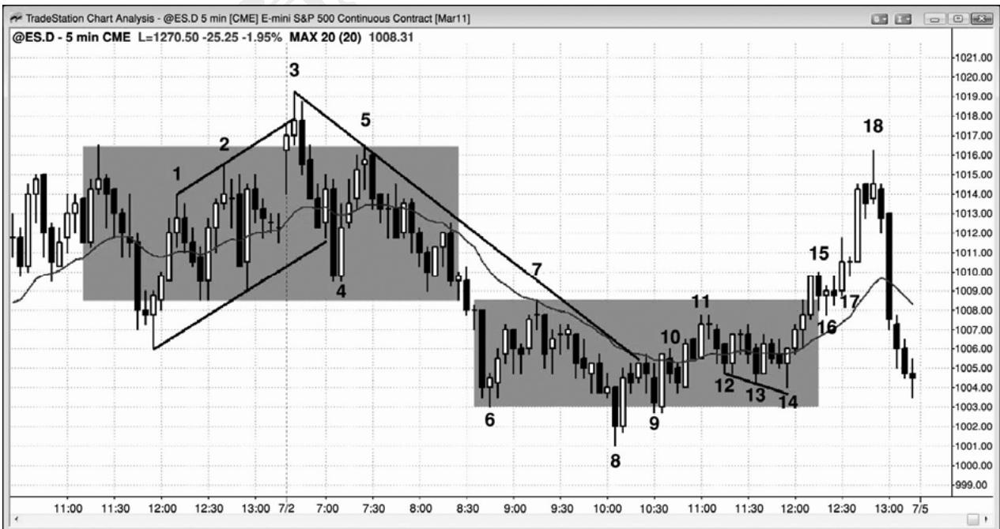
在图 PIV.3 中，有两段交易区间，交易者们可能会把部分头寸波段化，预期市场突破进入一轮趋势。在上侧区间中，交易者们可能会在棒 3 低点下方做空，棒 3 是昨日高点楔形反转的信号棒。由于截止棒 4 的下跌运动跌破了多头趋势线，所以市场随后可能形成一个更低高点，然后反转进入空头趋势。这使得交易者们可以在棒 5 的低点下方再次做空，远在市场跌破交易区间底部之前。
然后市场形成一个下侧交易区间。棒 11 反弹至下侧区间的顶部，突破了空头趋势线，所以交易者们应该正在寻找一个更低低点或更高低点，然后是可能的向上反转。在棒 14 更高低点，市场形成一个楔形多头旗形，棒 14 是一条强多头反转棒。这就允许多头在突破实际发生前若干棒买进。在棒16和17处形成一个高点1突破回撤做多架构。
总之，趋势越强，反转交易的信号棒就越重要。交易区间信号棒也常常不太完美。可以接受的做空架构可能拥有带多头实体的信号棒。类似地，可以接受的做多架构可能拥有带空头实体的信号棒。具体的例子包括棒 3、5 和 7，棒 11 后一棒，以及棒 18。
P187
老手们看到截止棒 6 的向下突破之后，认为当天很可能从交易区间日演变为趋势型交易区间日。激进的多头会在棒 8 收盘买进，因为它是一条大型空头趋势棒，而且位于他们认为很可能是正在形成的下侧交易区间中向下的一波测量运动的目标区域。另外有一些多头会在棒 8 跌破棒 6 低点时买进，有一些会在低于棒 6 一定数量的跳动处买进。有的会在棒 6 下方1 点处买进，并且试图在低于棒 6 两点、3 点、甚至 4 点处买进更多。有些人认为那个突破可能是一个 5 跳动失败突破，基于这一观点，他们在棒 6 下方 4 个跳动处买进。少数交易者会在棒 6 被向下突破时做空，然后在他们的刮头皮利润目标处（他们的入场点下方 1 点）反转做多。还有人会在棒8跌穿趋势通道线（未画出，通过昨日低点和棒6（低点））时买进，或者在市场跌破趋势通道线后从棒 8 低点向上反弹几个跳动后买进。由于这些多头都认为市场正演变为一个趋势型交易区间日，而且正在形成下侧交易区间，所以他们正在采用刮头皮方法，就像大部分交易者在市场处于交易区间中时所采用的方法一样。今天的波段相对较大，所以很多多头在刮头皮时所用的利润目标是 3 点或 4 点，而不是 1 点或两点。对于风险相对较高（低胜率）的交易，他们需要足够的回报，那些交易的风险比较高（正在逐步加仓的多头可能会冒4到6点的风险）。由于老手们认为市场处于交易区间内，所以空头刮刮头皮者们正在形成中的交易区间的顶部附近做空，比如在棒 7 或棒 11 前后。由于棒 14 可能是返回测试上侧交易区间的起点，而且之后形成几条多头趋势棒，所以大部分空头将从那一点开始不再准备做空。
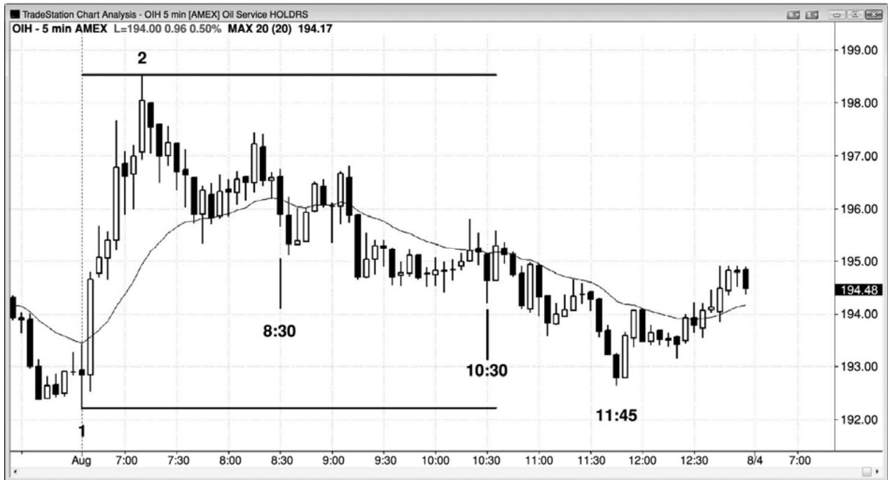
当交易日不是明朗的交易日时，当市场位于当日区间的中间三分之一，且在当日交易时段的中间三分之一时，交易者们应该特别谨慎。在图 PIV.4 中，存在大量重叠棒线、小十字星、以及微小的失败突破，使得价格行为很难阅读。这是一段带刺铁丝型的紧凑交易区间，将在第 22 章讨论。通过练习，交易者能够成功地在这些环境中交易，但是绝大多数交易者更可能在头一两个小时里把大部分、甚至全部利润都还回去。（交易的）目的是赚钱，有时不交易、等待强架构将对你的账户更好。图中，横向价格行为一直持续到太平洋标准时间上午11:45，那在一天当中相对较晚了。时间参数仅作参考。最重要的因素是价格行为，在交易区间日，最好的交易是在当天的高点和低点做逆势交易，但这需要耐心。
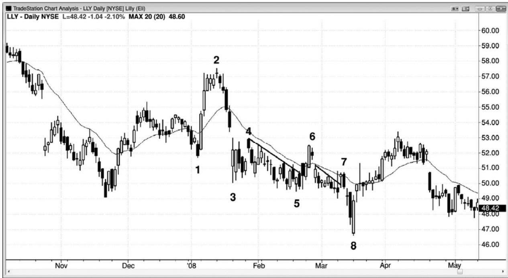
P188
如果市场先形成一个上涨尖峰，然后又形成一个下跌尖峰，那么当多空双方努力在自己方向制造坚持到底运动时，倾向于引出一段交易区间，反过来也是一样。在图 PIV.5 中，EliLilly（LLY）日线图显示出一波迅猛的上涨，在棒 2 结束，然后又出现一波迅猛的下跌。没有明确的迈进形态；相反的，在棒 4 出现一个低点 2 突破回撤。棒 6 和 7 是短暂的空头趋势线突破之后的做空信号棒（棒 6 是一条第一均线缺口棒）。这个尖峰和通道空头趋势的低点棒8，不是一波很好的测量运动，而且接下来市场测试空头通道的起点棒 4。
先是一波迅猛的上涨运动，然后是一波迅猛的下跌运动，比如截止棒 2 的上涨和随后的下跌，是一个高潮反转，是某张较高时间框架图表上的一个双棒反转形态。而在更高的时间框架图表上，它可能是一条反转棒。棒 8 是一个卖出高潮和一个双棒反转，那波运动可能是某张更高时间框架图表上的一条反转棒。然后市场进入交易区间，演变为一条多头通道。
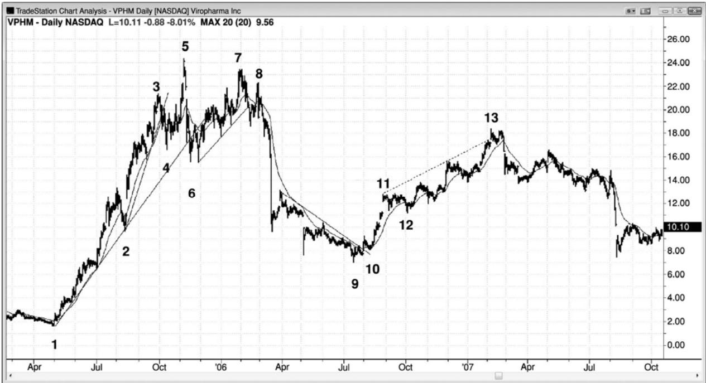
强趋势之后出现回撤，可能演变为交易区间，有时可能演变为反转，如图 PIV.6 所示。这里 ViroPharma Inc.（VPHM）的日线图上有一条很强的多头趋势，然后是一轮很强的空头趋势，整张图表演变为一个大型交易区间。大涨之后出现大跌，是一种买进高潮，然后，当多空双方继续交易，都努力在自己的方向上制造坚持到底时，接下来通常会形成一段交易区间。
在棒 1 底部之后的某个点处，动能交易者们控制市场，驱动市场大幅上涨，远远超出基本面预期。然后市场快速下跌至棒9，在那里形成一个三推形态（一个楔形变种），引出尖峰和通道上涨，直至棒 13，实际上形成一个大型交易区间。棒 13 过冲趋势通道线，对通道的向上突破尝试失败。尖峰和通道多头趋势，无论看起来有多强，随后通常都会测试通道起点，即棒 12 低点。
P189
棒 10 是一个突破回撤更高低点，是做多的二次机会。
很多动能玩家在棒 4 趋势线突破后的那波上涨中出货，多头能够推动市场在棒 5 到达一个新高，但是在这一区域遭遇激进的卖家，他们有能力突破重要的多头趋势线，推动市场跌至棒 6 低点，在棒 7 测试棒 5 趋势高点，形成一个更低高点之后，形成一个大型的向下反转形态。那个向下反转脱离了截止棒 7 的三次上推。在这一点，动能玩家离场，寻找另一只股票。截止棒 7 的上涨包含几个波段，表现出双向交易，所以动能比先前的上涨和截止棒 6 的抛盘要低。它成为一波回撤，在截止棒6的下跌尖峰之后，引出一条空头通道。
市场继续下跌，直到价值交易者们认为基本面的强度足以使那只股票在棒 9 附近存在交易价值。棒 9 也是一个三下推买进架构。它还靠近某个斐波那契折返位，但那并不相关。只通过观察你就可以看到那波回撤很深，但是并没有深到使从棒1开始的反弹的力量完全消除。多方仍然有足够的力量使那只股票反弹，特别地，价值交易者们也回到了场中。根据基本面因素，他们感觉那只股票是便宜的，他们在意向是当那只股票继续下跌时不断买进（除非下跌幅度太大）。
多头市场中的交易区间的最后一条腿常常是一条空头通道，比如在这里。有的交易者把从棒 3 到棒 9 的整个运动看作一个楔形多头旗形，它是一条空头通道。有的交易者认为那条空头通道的起点在棒5、棒7、或者在棒8后面的那个大型空头尖峰之后。那个空头尖峰引起三次下推和一条楔形空头通道。交易者们在棒 9 上方买进，在棒 10 和 12 处的突破回撤买进。
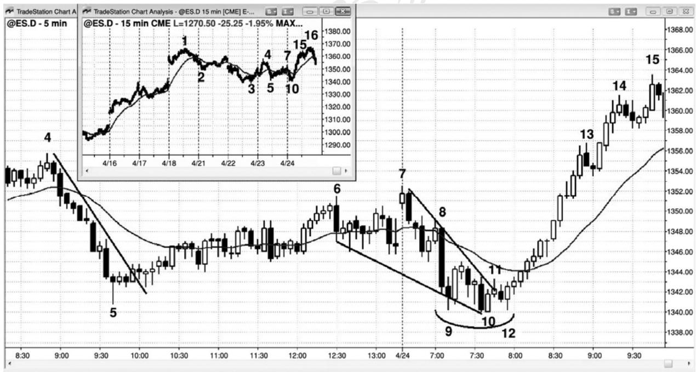
交易区间可能是一个反转架构，特别是当棒线和双棒反转底部形成尾线时，它们是更高时间框架图表上的反转棒。如图 PIV.7 所示，昨天有一个空头尖峰，然后在当天剩余时间里，是一条低动能多头通道。所有多头通道都是空头旗形，这条多头通道在今天开盘向下突破。不过，市场三次尝试（棒 8、9 和 12）跌破昨日低点，每次都是找到买家而非卖家。从棒 9到棒 12 的小型交易区间引出一个向上反转，而不是向下突破。棒 12 处失败的低点 2 引出了今天的强多头趋势。
虽然交易者只需观察一张图表就可成功交易，但是关注大的画面，通常会有所帮助。市场已经在一个大型交易区间内行进了 4 天，如插入的 15 分钟图所示。编号是相同的，但 15分钟图开始的较早，而且在 5 分钟图之后结束，所以多了一些编号。由于在持续了 4 天的交易区间形成之前是一轮多头趋势，所以交易者们正在寻找向上突破。多头市场中的交易区间的最后一条腿常常是一条空头通道，那是空方最后一次尝试使市场向下反转。大部分反转形态都是交易区间，但大部分反常形态都会失败，比如这一个。对于通道的起点，可能有几种选择（棒 6、7 和 8），至于哪个最重要，不同的交易者有着不同的看法。不过，他们都同意棒 10 和 12 是合理的买进架构。棒 10 是市场在跌破昨日低点后第二次尝试向上反转，棒 12是棒 11 向上突破空头趋势线之后的一个突破回撤，也是一个更高低点。强多头趋势棒是买压的征兆，当准备买进时，看到买压总是好的。
P190
这张图表的更深入讨论
如图 PIV.7 所示，昨天从棒 5 到棒 6 的多头通道突破了空头趋势线，所以今天的更低低点可能是一个趋势反转。
昨天的空头旗形成为空头趋势中的最终旗形（但空头趋势是在多头市场中的一个大型 4天交易区间中）。每当出现相对水平的空头旗形，或者处于紧凑通道内的倾斜的空头旗形时，它将会对市场产生磁性拉力，常常会阻止突破幅度变得非常大。紧凑交易区间是多空双方的一个舒适区，双方都把那个价位看作一个价值区。交易者们注意到这一点，正在寻找突破后向上反转的征兆。棒 12 处失败的低点 2 也是一个双重底回撤买进架构。有的交易者把它看作一个三重底或一个三角形反转。大部分反转形态都拥有多重解释，不同的交易者喜欢以自己独特的方式去描述它。无论你把它叫做什么都不重要，因为关键在于你注意到可能的反转，而且寻找某个理由做多。
Created with TradeStation
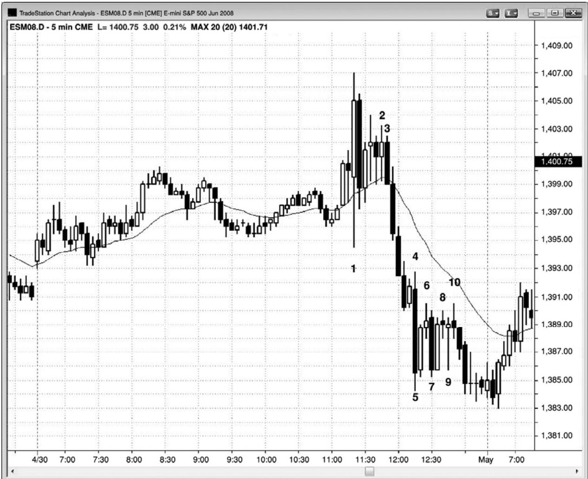
FOMC 报告在太平洋标准时间上午 11:15 发布，在图 PIV.8 中在棒 1，5 分钟电子迷你形成一条大型外包棒，但它的高点一直没有被超越。随后是一条大型空头趋势棒，形成一个买进高潮，接下来通常是一个交易区间。交易区间可以短到只有一棒，也可以长到持续几十棒。不久，空方便压倒了多方，制造了一个 4 棒空头尖峰。尽管报告可能是反复无常的，但价格行为是可靠的；所以不要被情绪左右，而是只寻找合理的入场。
从棒 5 开始，市场进入一段交易区间，那段交易区间包含（两个）大型双棒反转和很长的十字星。每当市场在当日极点处以多个大型反转形成一段交易区间时，通常最好寻找反转入场，而不是顺势架构。大型、重叠的棒线和尾线显现出双向交易，当存在强双向交易时，在当日高点买进，或者在当日低点卖出，都是不谨慎的。从棒 5 开始的紧凑交易区间由大型棒线、带下尾线的棒线和双棒反转构成，都表明多头正愿意变得积极。这是一段强双向交易区，所以在此区域内，多空双方都感觉存在价值。所以，如果价格以向下突破的形式下滑，那么买家将把更低的价格看作具有更高的价值，他们将会积极买进。空头在区间内看到价值，不大愿意在区间下方做空。空头的相对缺乏，加上多头买进行为的增加，通常致使突破失败；
市场通常会向上反弹，进入磁力区，有时市场反转。
所有尖峰也都是突破和高潮。从棒 3 开始的 4 棒空头尖峰拥有越来越小的实体，表明动能正在衰退。卖出高潮之后是一棒暂停，然后在棒 4 处形成另一条大型空头趋势棒，形成连续的卖出高潮。当情绪化的卖家已经在短时间内卖出两次时，通常只剩下非常少的人愿意在低位卖出，底部常常临近。收盘前出现了第三次卖出高潮，然后市场在第二天开盘上涨。
P191
这张图表的更深入讨论
图 PIV.8 中的棒 2 是一条高点 2 做多入场棒，但是这个架构存在一个问题。每当出现三条或更多几乎完全重叠的棒线，它们刚好位于均线上方，并且出现一个买进信号，入场棒靠近这个交易区间的顶部时，它很可能是一个做空陷阱（译注：应为做多陷阱吧？）。如果要入场交易，那么在前一棒高点上方做空会更为合理，因为这是一段小型的紧凑交易区间，而大部分交易区间突破失败。是的，它是一个高点 2，但是一个永远不要考虑的高点 2。
棒 3 是一个失败的高点 2，所以在当日高点处有被套的多头。它也是一条强空头趋势棒，形成一个很好的做空入场。由于在这一点市场处于交易区间内，所以那两次小型上推使得棒3 成为一个低点 2 做空架构。由于该架构靠近当日高点，所以是一个准备做空的好位置。最后，它是一条大型空头趋势棒之后的一个双重顶空头旗形，是一个高潮反转。
棒 6 是一个低点 1 做空架构，但它前面是连续的卖出高潮，所以市场很可能形成两条腿的横盘至上涨调整。几率偏向于形成一个更高的低点和第二条调整腿，但那些棒线非常长，虽然很可能形成更高低点，也足以为做空头刮头皮交易提供空间。
棒 7 是一个双棒反转形态的第一棒，最好在两棒中较高一棒的上方买进，而不只是在多头棒上方买进。这是一个过度激进的多头如何被套的例子。由于在这一点处市场已经形成几条大型的横盘棒线，所以它是在交易区间内，在靠近区间的顶部，最好寻找做空架构，而不是买进架构。低买高卖是交易区间中最好的策略。
棒 8 把多头套进一笔糟糕的高点 2 做多交易，他们将在棒 8 下方的低点 2 做空架构离场。信号棒足够小，所以没有做空头刮头皮的空间，但是在两个双棒反转形态和一条十字星信号棒之后，这是一个风险较高的做空架构。
棒 10 是另一个做多陷阱，弱势多头在一条大而诱人的十字星顶部买进。同时，聪明的空头会寻找一条小型架构棒作为做空入场，因为（被套的）多头将被迫卖出，而且没有剩余的买家，从而使市场迅速到达空头刮头皮的利润目标。由于这是第三次上推，所以应该预期它的作用就像是一个楔形顶，随后是一条空头腿进入收盘。由于这是一个交易区间，没有什么可供反转形态反转，所以在区间顶部的长棒线上方买进很可能成为被套的多头。聪明的空头仍然在前一棒的高点上方、在区间顶部附近的小型棒的低点下方做空。
这个交易区间成为一个最终旗形，在次日开盘向上反转，在当天第三棒形成一个高点 2入场。实际上，你可以把报告之前的一整天的走势看作一个最终旗形。市场刚好在报告之前向上突破，然后在报告时的棒 1 下跌，再次尝试从交易区间中向上突破。每当市场两次尝试做某件事情都失败后，它通常会尝试做相反的事情。这使得市场在棒 1 买进高潮之后很可能向下突破。
棒10后面的大型空头趋势棒形成第三个连续的卖出高潮，之后很可能形成至少包含两条腿的上涨，但有时可能只是形成一波横向的两条腿调整。
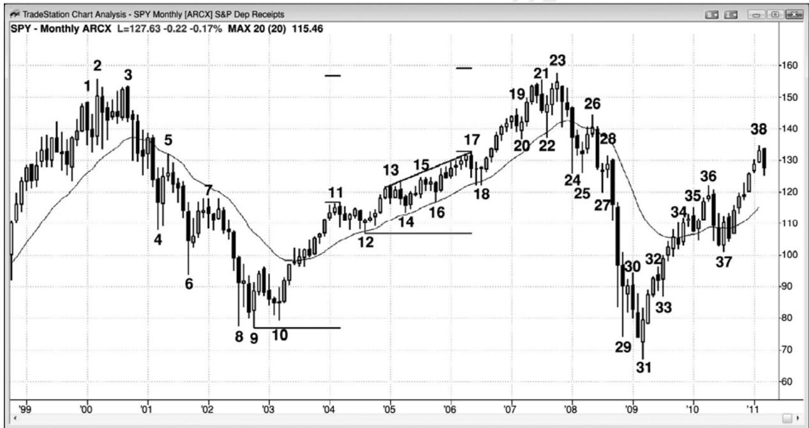
有时，交易区间可能引起趋势反转，而不是延续。在 PIV.9 所示的 SPY 月线图上，交易区间 4 次引起反转。反转形态将在第三本书中进行更全面地讨论。这张图的目的是展示交易区间可能成为反转形态。
P192
棒 4、棒 6 和棒 8 或棒 9 是三次下推，棒 9 之后两棒形成一个低点 2 做空架构，引出一个更高低点，而不是新的低点。棒 4、6 和 8 都是大型空头趋势棒，所以它们形成三个连续的卖出高潮。那就意味着在三条棒线中，交易者们都在任意价位积极卖出，而不必等待回撤。这些交易者们都在绝望地卖出。虽然他们差不多都是最后放弃的多头，但其中也有一些迟到的弱势空头，他们之前认为不会出现任何明显的回撤。他们因错过如此一大段空头趋势而感到不安，他们决定不再错过空头趋势，于是他们在市价和小幅回撤做空。一旦这些情绪化的空头做空，情绪化的多头放弃并卖出，那么就只剩下非常少的交易者愿意在空头趋势的底部卖出。三次高潮之后，仅当出现明显的反弹，并且同时形成很好的做空架构时，交易者们才会考虑做空。他们看到了反弹，但是没有看到做空架构，直到上涨运动持续了如此长的时间，成为一轮持续 5 年之久的新多头趋势。
棒 8 和它后面一棒都拥有很长的下尾线。棒 9 是一条多头反转棒，是一个双棒反转形态的第二棒，该反转形态是某张更高时间框架图表上的一条带下尾线的反转棒。棒 10 和它前面一棒也拥有很长的下尾线。这就意味着在这些棒线收盘之前，多头正积极买进，他们在这一价位胜过了空头。多头认为这一区域存在很高的做多价值，空头认为价格太低，不能积极做空。有些交易者把棒 8、9 和 10 看作一个三重底，有些交易者把它看作一个头肩底。有的交易者认为棒8和棒9形成一个双重底，棒 10是对低点的成功测试，有的交易者把超越棒9的运动看作一个突破，把随后跌至棒 10 的运动看作一个突破回撤，形成一个更高低点。无论你用何种词汇描述它都没有关系，只要你看到市场正在告诉你多头正在控制市场就可以了。在三个卖出高潮和这样一轮强空头趋势之后，市场很可能向均线和棒 5 与棒 7 处的通道起点回撤，而且回撤至少包含两条腿。从棒 2 开始的整个下跌运动都在一条通道内，空头通道是一种多头旗形。（空头）通道常常在第三次下推后反转，所以聪明的交易者们知道，从棒 8 到棒10 的这条交易区间可能是一个反转，而不是一个空头旗形。
从棒20开始的上推和截止棒22的下跌构成一个买进高潮，尽管棒22拥有一个多头收盘。一旦市场从棒 23 处的双重顶向下反转，空头就希望棒 23 是截止棒 22 的空头尖峰之后的一个更高高点回撤，他们持续做空，努力制造一条下跌通道或下跌尖峰。多头持续买进，希望形成交易区间，然后再形成一条上涨腿。棒 24 空头尖峰具有足够的说服力，于是大部分交易者认为价格在下几棒很可能下跌，而不是上涨。
多头再次尝试在棒 24、25 和 27 制造一个底部，但此前市场刚刚从一个尖峰和通道顶部向下反转，很可能形成两条下跌腿，并且测试通道底部棒 12。另外，棒 24 这个下跌尖峰或许已经使市场反转进入一个空头波段。很可能出现坚持到底，表现为某种类型的空头通道，因为棒 24 对位于棒 22 低点处的双重顶颈线的向下突破非常强。与下跌棒相比，棒 25 相对较小，而且拥有一个空头实体。又形成一个下跌尖峰，至棒 27 结束，这使得下行动能太强，不能在棒 27 上方买进，尤其是棒 27 只是一条小十字星棒，不是一条强多头反转棒。面对如此强劲的下行动能，买家们将不愿在一个更低低点上方买进，但他们可能愿意在一个已经形成的强更高低点上方买进。买家们在两棒之后放弃，市场以卖出高潮的形式暴跌至棒 29 和棒31。
棒 29 前一棒、棒 29 和棒 31，都有很长的下尾线，再次表明买家正在每一棒收盘前积极买进。这是一个小型的三下推形态（在日线图是非常明显），从棒 30 开始的下跌尖峰是截止棒 29 的巨型卖出高潮之后的一个卖出高潮。连续的卖出高潮通常会引起回撤，至少是向均线回撤，持续至少 10 棒，并且至少拥有两条腿，有时它们可能引起趋势反转。这次买进的价位刚好略低于之前多头在棒 8、9 和 10 构成的底部积极买进的价位。市场在跌破那个波段低点后竭力向上反转，这种现象在交易区间中是很常见的。实际上，虽然有几轮持续时间达 5 年之久的强走势，但整个图表是一个大的交易区间。由于大部分突破尝试失败，所以当市场跌破棒 9 低点时，应该预料到会出现买压。
P193
这张图表的更深入讨论
如图 PIV.9 所示，当市场跌破棒 1、2、3 头肩顶时，市场开始翻转为总在场内空头。有些人开始在空头趋势棒棒 3 的下方做空，棒 3 形成一个更低高点的和双棒反转。随着市场尖峰下跌至棒 4，还有些交易者会以各种理由做空。尽管棒 5 是一条多头反转棒，而且向上突破一个双棒反转，但它是首次尝试向下突破从棒 3 开始的紧凑空头通道，所以很可能失败。多方需要以几条多头趋势棒的形式表现出更多的力量，然后才会变得积极。空头把棒 5 看作一个微型通道低点 1 做空架构，希望向下形成一波测量运动。棒 8、9 和 10 处的底部，只比利用尖峰起点棒 3 的开盘价到棒 4 的收盘价投影的测量运动略低，棒 4 是那个尖峰中的最后一条空头趋势棒。这也要归功于空头在那一区域的获利了结和多头的买进。
棒 10 是一个双重底回撤买进架构。
在截止棒 11 的反弹中，随着市场上涨，越来越多的交易者翻转做多。到市场在棒 12 暂停为止，差不多每个人都认为多头动能非常强劲，市场很可能进一步上涨。一旦总在场内交易翻转，交易者们就应该尽可能地入场。如果没有回撤，那么至少要买进一个小型头寸，使用宽松的止损，比如低于尖峰底部。那正是机构在做的事情。在整个上涨过程中，他们正分批买进，因为他们不确定何时会出现回撤，但是他们确信近期内价格将会更高，要确保从强趋势中获利。如果他们等待回撤，那么可能是在又形成很多多头趋势棒之后，于是回撤入场可能远远高于当前价位。
作为一条一般性规则，只要交易者们认为现在是一轮多头趋势，那么他们就应该在市价、棒线内的微型回撤或较低时间框架上的回撤至少买进一个小型头寸，因为等距运动的方向概率可能至少为 60%。举例说明，如果他们认为总在场内交易在棒 10 后面的第二条多头趋势棒翻转为多头，那么他们就应该假定市场向上形成一波测量运动的几率至少是 60%。交易者们测量从多头尖峰底部棒 9 到顶部棒 11 的高度，然后加到棒 11 尖峰的顶部。SPY 交易者们还会测量从尖峰第一棒（棒 10 后一棒）开盘价到尖峰第二棒收盘价的高度。如果 SPY 交易者们在那第二条多头趋势棒的收盘价买进，那么他们可能会把止损设在第一条多头趋势棒（前一棒）的低点下方，他们的风险大约为 12 点。随着尖峰继续增长，测量运动目标也继续增长，不过风险固定为12点，而且在某个点处他们可能会把止损移至盈亏平衡点。如果他们一直持有，直到市场在棒 12 向下反转，那么他们将赚到大约 50 点，初始风险为 12 点的情况下，入场几棒后便已达到盈亏平衡点。随着趋势继续向新高运动，他们可能会把止损跟踪调整至最近的波段低点下方。举例说明，在市场上涨超越棒 11 之后，他们的止损将是在棒 12 下方，他们将保护大约 9 点的利润。
尖峰又增长两三棒后，交易者们可能会让部分利润落袋为安，将自己的止损移至盈亏平衡点，假定市场向下运动跌破尖峰低点前向上形成一波测量运动（高度等于尖峰高度）的方向概率约为 60%或更高。
截止棒 11 的反弹是一个多头尖峰，截止棒 17 的通道拥有三推和一个楔形外形。这可能是通道的终点，但市场向上突破，而不是向下突破。通常，多头通道的向上突破会在运动 5棒左右之后向下回转，但这一次继续上涨了约 10 棒。如果楔形顶向上突破，那么常常见到市场向上形成一波测量运动。棒 13、15 和 17 形成一个楔形顶，棒 23 高点只比利用棒 12 低点到棒 17 高点投影的测量运动目标略低。另外，多头尖峰常常引起测量运动，其高度约等于第一棒开盘价或最低价到最后一棒收盘价或最高价的距离。多头腿的顶部棒 23 是一波向上的测量运动，把棒 9 低点到棒 11 高点之间的点数加到棒 11 的高点上。在测量运动目标，多头通常会部分或全部获利了结，激进型空头将开始做空。
棒 23 与棒 19 和 21 形成一个扩张三角形顶。
棒 20、24 和 27 形成一个楔形多头旗形，但是由于空头趋势棒数量多、尺寸大，所以它是一个较弱的做多信号。当市场向下突破楔形底部棒 27 时，又继续下跌，超出了测量运动目标。
从棒 10 到棒 23 的整个上涨是一条多头通道，所以是一个空头旗形。还有交易者认为那条通道是从棒 12 开始的。在这两种情况下，交易者们都认为市场应该向下测试，至少跌至棒12 低点附近。棒 24、25 和 27 的尾线表明存在一些买进行为，但是下行动能非常强劲，多头未能令市场反转。从棒 23 到棒 27 的下跌只有非常少的多头实体，而且那些多头实体相对较小，市场是在一条相对紧凑的空头通道内。多头不会在市场首次向上突破那条空头通道时买进，相反地，他们会等待突破回撤，突破回撤表现为更高低点的形式，而且他们希望在积极买进前看到几条强多头趋势棒。把这个底部与棒 23 处的顶部进行比较。直到强劲而有说服力的棒 24 空头突破，市场才变为总在场内下跌，而且直到出现一个更低高点，很多空头才会做空。市场在棒 26 处测试均线时形成一个低点 2 更低高点，下跌运动引人注目。
棒 29 卖出高潮之后的内包棒很可能是一个最终旗形，尤其是那次突破是另一波卖出高潮。这是棒 31 反转中的另一个因素。